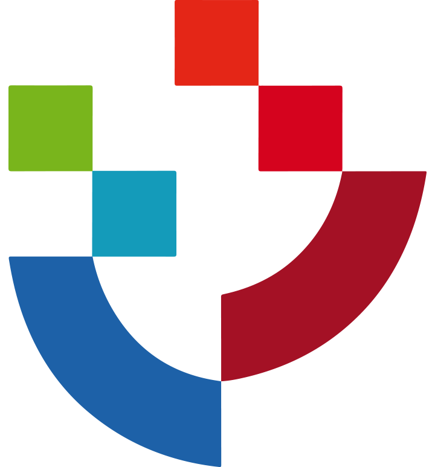
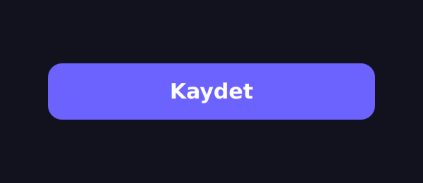
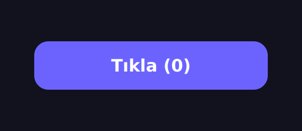
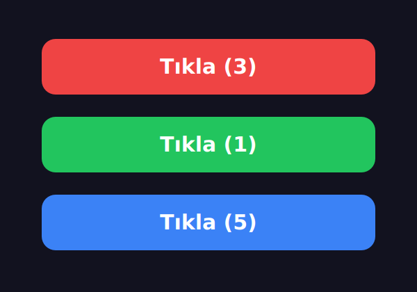

Kalıtım I — Hazır Sınıflardan Kendi Widget'ımıza
Geçen hafta class SayacPenceresi(QWidget)
yazdık — yani QWidget'tan türedik, farkında olmadan kalıtım yaptık. Bu hafta onu bilinçli yapıyoruz.
Kod tekrarını önlemek, hazır sınıfları yeniden kullanmak.
class Çocuk(Ata) — devral,
ekle, super() ile kur.
QPushButton'dan kendi widget'ımızı türet.
Sonunda: küçük bir tıklama paneli uygulaması yapacağız.
class KirmiziButon(QPushButton):
def __init__(self):
super().__init__()
self.sayac = 0
self.setText("Tıkla (0)")
self.clicked.connect(self.artir)
self.setStyleSheet("background:#ef4444")
def artir(self):
self.sayac += 1
self.setText(f"Tıkla ({self.sayac})")class MaviButon(QPushButton):
def __init__(self):
super().__init__()
self.sayac = 0
self.setText("Tıkla (0)")
self.clicked.connect(self.artir)
self.setStyleSheet("background:#3b82f6")
def artir(self):
self.sayac += 1
self.setText(f"Tıkla ({self.sayac})")Ya 5 renk daha istersek? Ya artir()'de bir hata
bulursak — 7 yerde mi düzelteceğiz?
class SayacButonu(QPushButton): # ORTAK olan yukarıda
def __init__(self):
super().__init__()
self.sayac = 0
self.setText("Tıkla (0)")
self.clicked.connect(self.artir)
def artir(self):
self.sayac += 1
self.setText(f"Tıkla ({self.sayac})")class KirmiziButon(SayacButonu): # sadece FARK
def __init__(self):
super().__init__()
self.setStyleSheet("background:#ef4444")
class MaviButon(SayacButonu):
def __init__(self):
super().__init__()
self.setStyleSheet("background:#3b82f6")Sayma mantığı tek yerde. Yeni renk = 3 satır. Hata = tek düzeltme. İşte kalıtım bunun için var.
Temel/üst sınıf. Kendisinden yeni sınıflar türetilir; ortak davranışı taşır.SayacButonu
Atadan türeyen sınıf. Her şeyi devralır + kendi farkını ekler.KirmiziButon
KirmiziButon bir SayacButonu'dur; o da bir QPushButton'dur.
Ata için base / super / üst sınıf / ata; çocuk için derived / sub / alt sınıf / çocuk — hepsi aynı şey.
QObjectQt · her Qt nesnesinin atasıQWidgetQt · ekranda görünen her şeyQAbstractButtonQt · tüm butonların atasıQPushButtonQt · hazır butonSayacButonubizim · slayt 4KirmiziButonbizim · slayt 4isinstance(KirmiziButon(), QWidget)
→ True. Kalıtım geçişlidir: KirmiziButon, QWidget'ın show(),
resize()… her şeyini taşır. (Günlük hayatta da öyle: Kedi bir Hayvan'dır,
Hayvan bir Canlı'dır.)
SayacButonu bir QPushButton'dur.class SayacButonu(QPushButton)
Çocuk,
atanın bir türüdür.
Panel'in içinde bir SayacButonu var.self.buton = SayacButonu()
Nesne,
başka nesneyi içinde tutar.
Sen karar ver — hangisi?
KirmiziButon ↔ SayacButonuPanel ↔ QVBoxLayoutPanel ↔ QWidget"X bir Y midir?" → evetse kalıtım. "X'in bir Y'si var mı?" → evetse içerme.
from PySide6.QtWidgets import QApplication, QPushButton
class BenimButonum(QPushButton): # QPushButton'dan TÜRE
pass # tek satır bile yazmadık...
app = QApplication([])
btn = BenimButonum("Kaydet") # ...ama TAM bir buton!
btn.show(); app.exec()
Tıklanır, metin taşır, boyutlanır — hepsi QPushButton'dan geldi.
Parantez içine atayı yazmak = "bundan türe". Python'da
her sınıf gizliden object'ten türer: class A: =
class A(object):.
# SayacButonu: slayt 4'teki ata
# (self.sayac'ı kurar, artir() metodu var)
class KirmiziButon(SayacButonu):
pass
k = KirmiziButon()
k.sayac # 0 ← ÖZNİTELİK (SayacButonu kurdu)
k.artir() # sayac → 1 ← METOT (SayacButonu'nda)
k.text() # 'Tıkla (1)' ← METOT (Qt'nin QAbstractButton'ında)KirmiziButon tek satır yazmadı; iki kattan devraldı:
🧩 bizim atamızdan: sayac, artir()
🧩 Qt'den:
text(), setText(), show()…
Öznitelik = veri (durum). Metot = davranış. Kalıtım her ikisini de taşır.
class KirmiziButon(SayacButonu):
def sifirla(self): # YENİ metot (sadece burada)
self.sayac = 0
self.setText("Tıkla (0)")
k = KirmiziButon()
k.sifirla() # ✅ çalışır
s = SayacButonu()
s.sifirla() # 💥 AttributeError: 'SayacButonu'
# object has no attribute 'sifirla'Çocuk atadan gelenlere ekler; ama eklediği ataya geri gitmez.
Kalıtım tek yönlüdür: çocuk atayı görür, ata çocuğu görmez.
(sifirla()'yı Hafta 1'de
SayacPenceresi'ne eklemiştin — hatırla!)
__init__ Yazmazsan Ne Olur?class BenimButonum(QPushButton):
pass # __init__ YOK
b = BenimButonum("Kaydet") # QPushButton'ın kurucusu çalışır
b.text() # 'Kaydet'
class KirmiziButon(SayacButonu):
pass # __init__ YOK
k = KirmiziButon() # SayacButonu'nun kurucusu çalışır
k.sayac, k.text() # (0, 'Tıkla (0)')Çocukta __init__ yoksa Python atanınkini kullanır — atanın
parametreleriyle birlikte ("Kaydet"). Bedavaya kurucu!
Bu yüzden basit türetmelerde pass yeter.
__init__'in Varsa: super()class RenkliSayac(SayacButonu):
def __init__(self, renk):
super().__init__() # 1) önce ata kursun
self.setStyleSheet(f"background:{renk}") # 2) sonra farkın
kirmizi = RenkliSayac("#ef4444")
mavi = RenkliSayac("#3b82f6") # tek sınıf, her renkKendi __init__'ini yazınca atanınki otomatik çalışmaz — onu sen
super().__init__() ile çağırırsın.
Unutursan Qt hemen RuntimeError verir.
(Detay: Hafta 3)
Slayt 4'te her renk ayrı bir sınıftı; şimdi tek sınıf +
parametre. Ortak iş atada (SayacButonu), fark kurucuda.
Python önce nesnenin kendisine, sonra sınıfına, sonra atalarına bakar — alttan yukarı; ilk bulduğu yerde durur.
objectPython · en tepeQObjectQtQWidgetQtQAbstractButtonQtQPushButtonQtSayacButonubizimKirmiziButonbizim ·
sifirla()knesnenin kendisi1 · Nesneyi seç
2 · Ne arıyoruz?
Veriler gerçek: PySide6 6.11'de KirmiziButon.__mro__ ve sınıfların
__dict__'i. Gerçek zincirde QObject'ten sonra QPaintDevice ve Shiboken.Object da var — burada
sadeleştirildi.
Bir kez yaz, uygulamanın her yerinde kullan. Kopyala-yapıştır yok.
Görünüm + davranış + durum tek sınıfta paketlenir (kapsülleme).
Hâlâ bir QPushButton olduğu için Qt'nin her yerine takılır.
Profesyonel Qt uygulamaları düzinelerce özel widget'tan oluşur — hepsi kalıtımla.
class SayacButonu(QPushButton): # QPushButton'dan TÜRE
def __init__(self):
super().__init__() # atanın kurucusu (şart!)
self.sayac = 0 # KENDİ eklediğimiz durum
self.clicked.connect(self.artir) # devralınan sinyal
self.guncelle()
def artir(self): # KENDİ davranışımız
self.sayac += 1
self.guncelle()
def guncelle(self):
self.setText(f"Tıkla ({self.sayac})") # devralınan metot
• Tıklanabilirlik ve clicked sinyali
• setText(), boyut, stil
•
Pencereye eklenebilme — QPushButton neyse hepsi.
• self.sayac özniteliği (durum)
• artir() ve guncelle()
metotları
• Kendi kendini güncelleme davranışı.
Kalıtımın gücü: sıfırdan buton yazmadık — hazır olanı alıp yalnızca farkı ekledik.
self.sayac += 1
self.setText(f"Tıkla ({self.sayac})")
Sayaç QLabel'de değil, butonun kendisinde. Çünkü
SayacButonu hem QPushButton hem de kendi durumunu taşıyan bir nesne. Tıkla!
Yukarıdaki hâli de doğru. Ama Python'da @property ile daha şık
olur: atama, arayüzü kendiliğinden günceller.
class SayacButonu(QPushButton):
def __init__(self):
super().__init__()
self.sayac = 0 # setter çağrılır → metni de kurar
self.clicked.connect(self.artir)
@property
def sayac(self): # GETTER (okuma)
return self._sayac
@sayac.setter
def sayac(self, deger): # SETTER (yazma)
self._sayac = deger
self.setText(f"Tıkla ({deger})") # arayüzü güncelle
def artir(self):
self.sayac += 1 # setter hallederGetter @property →
btn.sayac okunurken çalışır.
Setter @sayac.setter →
atama, arayüzü kendisi günceller.
✅ guncelle() gerekmez — daha temiz kapsülleme.
btn = SayacButonu()
isinstance(btn, SayacButonu) # True
isinstance(btn, QPushButton) # True ← "is-a" !
issubclass(SayacButonu, QPushButton) # Trueisinstance(nesne, Sınıf) → bu nesne o türden mi? issubclass(A, B) →
A sınıfı B'den mi türedi? İkisi de kalıtım zincirine bakar. Bu yüzden
SayacButonu'nu bir QPushButton beklenen her yere koyabilirsin.
class Panel(QWidget): # QWidget'tan TÜRE
def __init__(self):
super().__init__()
self.setWindowTitle("Tıklama Paneli")
duzen = QVBoxLayout(self)
duzen.addWidget(SayacButonu()) # kendi widget'ımızı kullan
duzen.addWidget(SayacButonu()) # ikinci, BAĞIMSIZ butonPanel QWidget'tan türer (is-a); içinde SayacButonu'lar tutar (has-a).
Kalıtım + içerme birlikte.
İki buton ayrı nesne → sayaçları bağımsız.
Her "+" = yeni bir nesne; her nesnenin kendi
self.sayac'ı var. Düz QPushButton saymaz — artir()'ı
devralmadı!
tarayıcıda simülasyon · Python'daki davranışın aynısı
Kendi __init__'inde super().__init__()
çağırmamak → Qt RuntimeError verir, widget kurulmaz.
__init__'te setText() yoksa buton ilk
tıklamaya kadar boş ve minicik (47×22 px) açılır — "buton nerede?" diye arama.
"Sahip olma"yı kalıtımla çözmeye çalışmak: Panel bir buton değildir, butonları vardır.
Çocuğa özel bir şeyi (ör. kırmızı rengi) ata sınıfa yazmak → tüm kardeşler kırmızı olur.
Kural: ortak olan ataya, farklı olan çocuğa.
class BenimButonum(QPushButton): pass →
BenimButonum("Kaydet").text() ?sifirla() yalnız KirmiziButon'da.
SayacButonu().sifirla() ?__init__'i olan çocuk önce ne yapmalı?✅ Kalıtım kod tekrarını önler (DRY)
✅ is-a (kalıtım) ≠ has-a (içerme)
✅ class Çocuk(Ata) — öznitelik + metot devralınır
✅ Kurucu: __init__ yoksa atanınki; varsa super()
✅ Python alttan yukarı arar: nesne → sınıf → ata → … → object
✅ Kalıtım tek yönlü: ata çocuğun metodunu görmez (AttributeError)
✅ Qt zinciri: QObject → QWidget →
QAbstractButton → QPushButton → SayacButonu → KirmiziButon
✅ Kanıt: isinstance /
issubclass · Bonus: @property ile kendini güncelleyen sayaç
class Çocuk(Ata) + super().__init__()
— dönemin geri kalanı bu iki satırın üstüne kurulu.
super().artir() — atanın işini koru, üstüne kendi davranışını ekle.
for b in butonlar: b.artir() — aynı çağrı, her buton kendi bildiği gibi.
QAbstractButton() → NotImplementedError: … abstract class and
cannot be instantiated
pyinstaller --onefile panel.py — bugünkü panel tek tıkla açılan bir uygulama
olacak.
class Model(nn.Module): + super().__init__() — unutursan:
cannot assign module before Module.__init__() call
self.clicked.connect(self.artir) — sinyal/slot, bir tasarım desenidir.
En çok yazacağın satır
class Model(nn.Module) — bugünkü kalıbın aynısı.
Kalıtımla, farklı renklerde sayan butonlardan oluşan bir panel yap — bu iskeletin üzerine kur. Süre: ~40 dk.
class SayacButonu(QPushButton): # ORTAK ata
def __init__(self):
super().__init__()
self.sayac = 0
self.setText("Tıkla (0)") # metni baştan kur!
self.clicked.connect(self.artir)
def artir(self):
self.sayac += 1
self.setText(f"Tıkla ({self.sayac})")
# Görev: bundan renkli çocuklar türet, Panel'e diz3 renk, her buton kendi tıklamasını sayar:

SayacButonu sınıfını yaz
(yukarıdaki iskelet). Test et: tek buton sayıyor mu?
KirmiziButon,
YesilButon, MaviButon türet — her biri super().__init__() +
setStyleSheet.
Panel(QWidget) yaz;
QVBoxLayout'a üç butonu ekle.
if __name__ == "__main__":
içinde app, Panel(), show(), exec().
✅ Kontrol: Üç butona ayrı ayrı bas — sayaçlar birbirinden bağımsız artıyor mu? Öyleyse başardın.
Panele bir QLabel ekle;
tüm butonların toplam tıklamasını göstersin.
RenkliSayac(renk,
hedef) yaz: sayaç hedefe ulaşınca buton kendini kilitlesin —
self.setEnabled(False) (QWidget'tan devralındı!).
Sayacı @property
getter/setter ile yeniden yaz; guncelle() olmadan.
Bu görevler önümüzdeki haftaların (polimorfizm, soyut sınıflar) zeminini hazırlıyor.
super() & Metot EzmeDevraldığımız metotları ezerek (override)
değiştireceğiz; super() ile üst sınıfa erişip davranışı genişleteceğiz.